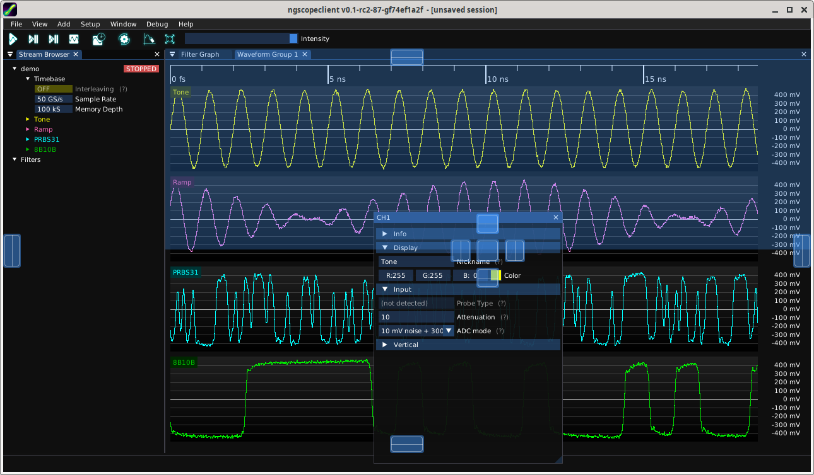
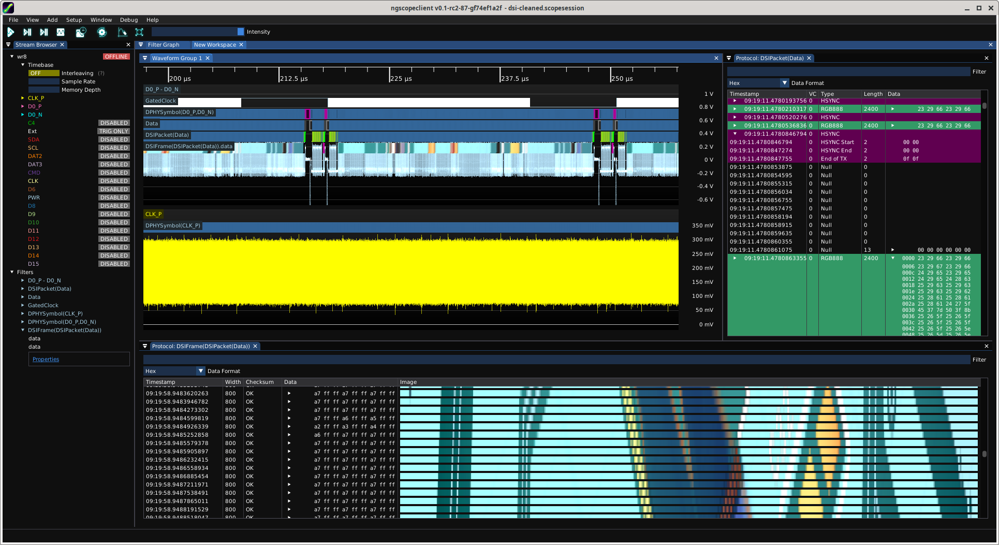
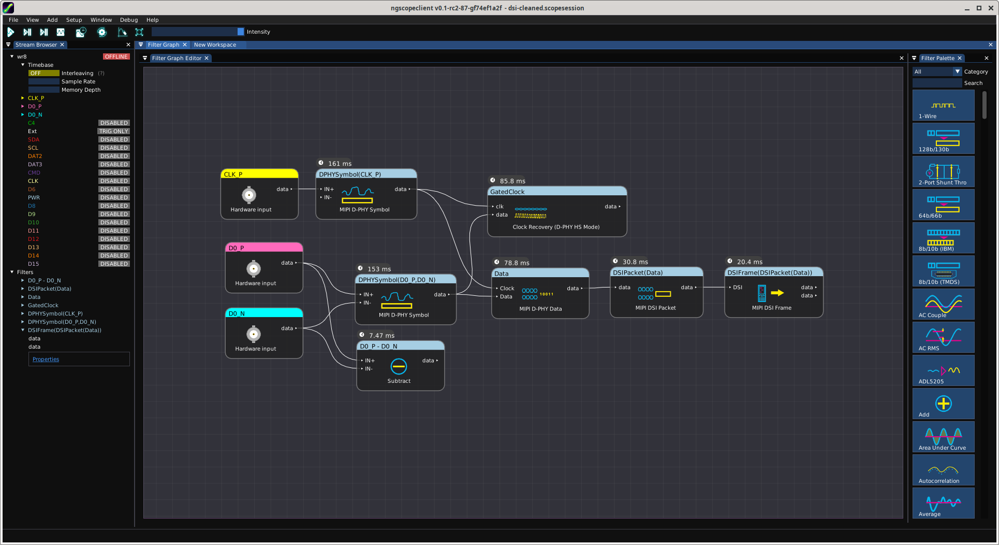
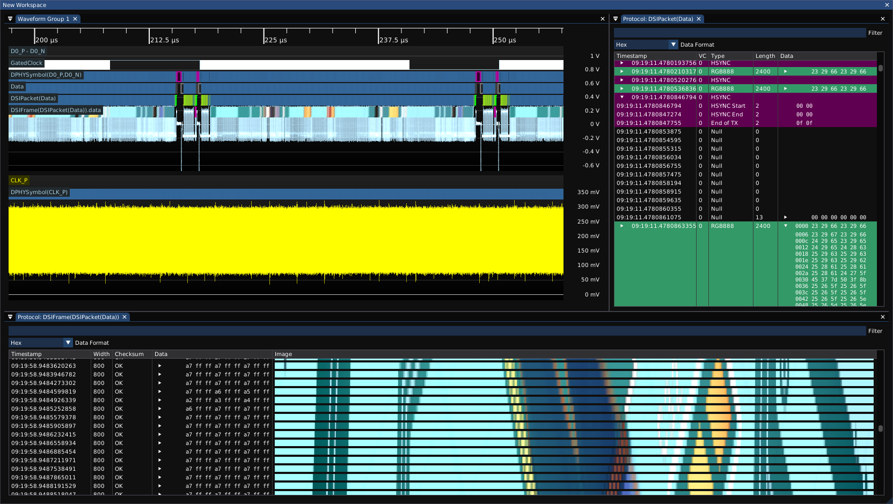

All dialog boxes, waveform groups, and other GUI elements in ngscopeclient may be used docked or free-floating as needed.
To dock a window, drag the title bar (if floating) or tab title (if docked) to the desired location (Fig. 7.1).

To create more complex windowing layouts, you may find it helpful to create workspaces.
A workspace is a window which has no function of its own, and simply serves as a container for docking other windows into. The workspace can itself be docked into another workspace or the main application window, allowing creation of complex multi-window or multi-tab layouts to suit your experimental needs (Fig. 7.2, 7.3, 7.4).
In the default ngscopeclient window layout, for example, the "Filter Graph" tab is a workspace which contains both the filter graph editor and the filter palette.
To rename a workspace, right click on the window title (if floating) or tab title (if docked) and enter the desired name.


